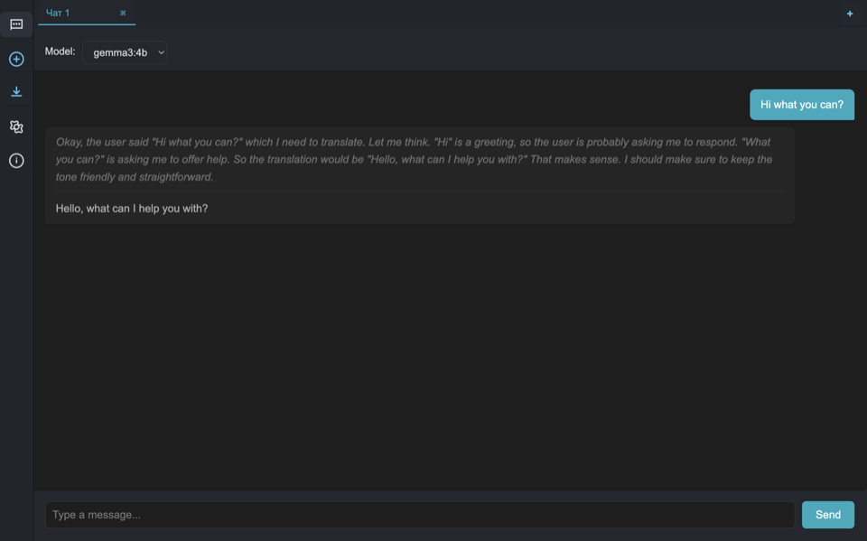

Open a project
Open the repository root to use worktrees. Choose an agent and a model, then describe the task. Use a scratchpad for a conversation without project files.
Give each task its own agent and Git worktree. Switch between active runs, inspect file changes, and hand work off from one desktop workspace.

Run separate tasks in parallel and review each change in its own checkout. Fllama also supports working directly in your project folder.
Open the repository root to use worktrees. Choose an agent and a model, then describe the task. Use a scratchpad for a conversation without project files.
Worktree creates a new branch and checkout on the first run. Project folder works directly on the current files. Wait until the active run finishes before starting another task in the same folder.
Use Run to follow status and activity, Files to browse the checkout, and Changes to inspect the Git diff of a selected file.
Start a follow-up with the previous prompt and response. A worktree handoff uses the existing branch and checkout, so a second agent can review the first agent’s changes.
Open a macOS screenshot to see the interface at full size.


Use Team mode in Fllama 2.0 when a task can be split into independent pieces. Open a Git repository with at least one commit, choose a coordinator, and add up to three workers.
Choose a coding agent, a local model, or an API provider for each task in Fllama 2.0.
Install the CLI you want to use and complete its sign-in or provider setup. OpenCode can also connect to a running server.
Start Ollama or the LM Studio local server. Fllama lists installed models and can download models from its Ollama catalog, including Qwen2.5 Coder.
Configure credentials in Settings. For another OpenAI-compatible server, enter its API base URL and a model ID when needed.
The installers below are for the 1.0.0 Ollama chat release. To try the Fllama 2.0 workspace shown above, run the current source from GitHub.
Start Ollama on your computer before opening the app. Use the model catalog to download a model or select one you already have.
Install Git and Node.js, then run these commands. Connect the agent or model provider you want to use in Settings.
git clone https://github.com/ArduRadioKot/Fllama.git
cd Fllama/src
npm ci
npm start

Yes. Start Ollama or LM Studio and select an installed model. Cloud providers and hosted CLI backends can send the selected task’s context to their services.
They stay in the original checkout. A new worktree starts from the committed snapshot. Choose Project folder to work with the files already in that checkout.
Inspect the diff in Fllama, then merge the branch with Git when you are satisfied with the change.
Fllama removes the task and its conversation. Its Git worktree and branch remain on disk.
Local Ollama and LM Studio servers can run without a cloud API key. CLI agents use their own sign-in. Cloud providers generally need an API key. Check the provider’s settings before starting a task.